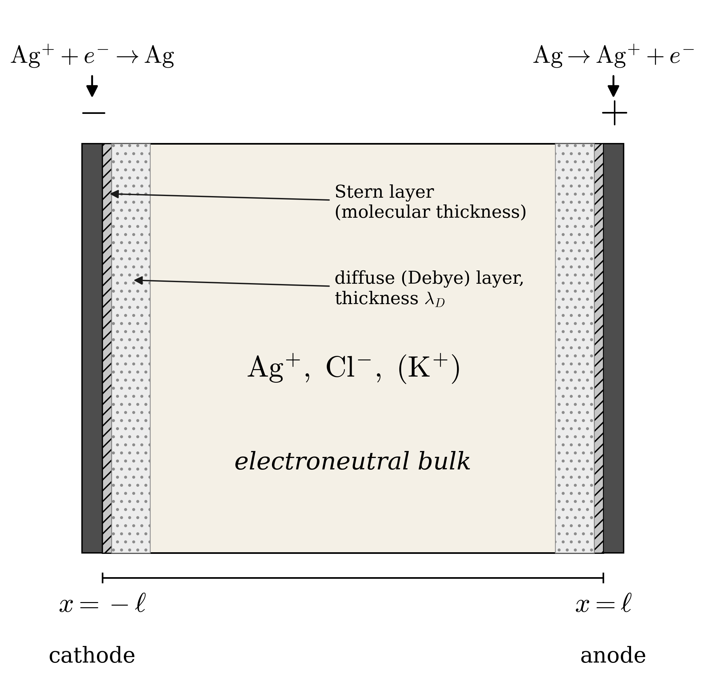

A constant electric field implies the electrolyte is electroneutral. The converse, however, does not hold — and that confuses students more than it should.
I am an Assistant Professor in the Department of Chemical and Biological Engineering at the University of Colorado Boulder. My research group, LIFE (Laboratory of Interfaces, Flow, and Electrokinetics), studies how ions, particles, and cells move and self-organize. This post is the interactive companion to a class-and-home problem we wrote, aimed at students of graduate transport phenomena and electrochemical engineering. The full problem statement, a worked solution, four figures, and seven references live in the preprint.
Drop a teaspoon of NaCl into a glass of water and the salt dissociates almost instantly into sodium cations (Na+) and chloride anions (Cl−). Both ions are now free to wander, dragged around by thermal kicks and any electric fields that happen to be present. What is striking is that even though they wander independently, they don't drift apart on macroscopic length scales. The cation and anion populations track each other almost perfectly:
Here $z_i$ is the valence of species $i$ (e.g. $+1$ for Na+, $-1$ for Cl−) and $c_i$ is its molar concentration. Why is electroneutrality so robust? The mental picture below has the answer: any small charge imbalance creates a strong restoring electric field that pulls the ions back together long before the imbalance can grow.
What ties charge to field is Gauss's law. Wrap any closed surface around a region of space; the total electric flux through that surface is proportional to the charge enclosed inside:
The animation below shows this in action. A dashed circle is our (2D) Gaussian surface. Inside are a few ions; the arrows on the boundary show the local outward normal component of $\mathbf{E}$. When the inside is electroneutral, the arrows balance. Add or remove a charge and the arrows tilt accordingly.
The integral form is good for intuition, but a differential form is what we use to solve problems. Shrink the Gaussian surface to a point. The integral on the left side becomes the divergence of $\mathbf{E}$, and the enclosed charge per unit volume is just the local charge density $\rho_F = F\sum_i z_i c_i$. With $\mathbf{E} = -\nabla\varphi$ for the potential $\varphi$, we have
The animation below makes the link concrete. The top bar shows the local charge density $\rho_F(x)$ along a one-dimensional cell. The bottom panel shows the slope $-\varepsilon\, dE/dx$ that Poisson's equation requires. Slide the imbalance amplitude and see them stay locked together.
Here is where many students get tripped up. From Poisson's equation, $-\varepsilon\, dE/dx = \rho_F$, two implications are easy to write:
The point is sharper still: electroneutrality in the bulk is a consequence of a separation of length scales, not a statement about the field. Once you non-dimensionalize Poisson's equation, the prefactor on the left-hand side becomes the square of the ratio of the Debye length $\lambda_D$ (the screening length set by the ion concentration) to the macroscopic cell length $\ell$:
Because $\delta$ is tiny, the left-hand side is essentially zero, so the right-hand side has to vanish too. That gives bulk electroneutrality $\sum_i z_i C_i = 0$. Notice that we never demanded anything of the field. The argument is purely about scales. The electric field is free to do whatever the rest of the equations — species transport and boundary conditions — tell it to do, and that often involves smooth spatial variation.
The class-and-home problem is built around a one-dimensional silver electroplating cell, a setup borrowed from W. M. Deen's Analysis of Transport Phenomena (Example 15.3-3). Two silver electrodes a distance $2\ell$ apart bound a quiescent electrolyte. At the cathode ($x=-\ell$) silver ions are reduced to silver metal, $\rm Ag^{+} + e^{-} \to Ag$. At the anode ($x=+\ell$) the reverse happens. The applied voltage drives a steady cation flux $n_{\rm Ag} = n_0$ between the electrodes; the chloride ion is unreactive at both electrodes and merely keeps the bulk electroneutral.

Each ionic flux obeys the Nernst–Planck relation,
That, plus Poisson's equation and the conservation conditions $\langle c_i\rangle = c_0$ (the cell-mean concentration of each species equals its initial uniform value), is the full system. We non-dimensionalize as in the equation block above and let $N_i = n_i \ell / (D_{\rm Ag} c_0)$ denote the dimensionless flux.
With only Ag+ and Cl− in solution, bulk electroneutrality reads $C_{\rm Ag} = C_{\rm Cl} \equiv C$. The Cl− balance with $N_{\rm Cl}=0$ gives $d\Phi/dX = (1/C)\, dC/dX$, and substituting into the Ag+ balance with $N_{\rm Ag} = N_0$ leaves an ordinary differential equation for $C(X)$. Imposing $\langle C\rangle = 1$ on the symmetric domain,
And here is the punchline: electroneutrality is satisfied at every interior point ($C_{\rm Ag} = C_{\rm Cl}$ everywhere), and yet the dimensionless field is not constant. It varies smoothly with position, monotonically rising from anode to cathode. Drag the slider to see how.
Now add KCl as a supporting (background) electrolyte. There are now three species: Ag+, Cl−, K+. The KCl background concentration $c_b$ is a parameter; we use the dimensionless ratio
Combining the Nernst–Planck flux for each ion with its boundary condition gives three balance equations. Adding them, applying bulk electroneutrality $C_{\rm Ag} + C_{\rm K} - C_{\rm Cl} = 0$ to kill the migration term, and integrating with the conservation conditions yields a closed-form solution:
Integrating the K+ balance using the now-known $d\Phi/dX$ gives $C_{\rm K}(X) = \kappa / C_{\rm Cl}(X)$ with $\kappa$ fixed by $\langle C_{\rm K}\rangle = 1/\Gamma$. The cation profile then follows from electroneutrality, $C_{\rm Ag} = C_{\rm Cl} - C_{\rm K}$. The widget below evaluates these in real time.
The limiting current is reached when the cathode-side cation concentration vanishes, $C_{\rm Ag}(-1) = 0$. With $C_{\rm Ag} = C_{\rm Cl} - C_{\rm K}$, this becomes $C_{\rm Cl}(-1) = C_{\rm K}(-1)$. Substituting the closed forms gives a single transcendental equation for the limiting flux $N_0^{\rm lim}$:
The plot below sweeps $\Gamma$ over five decades. The limiting flux has two clean asymptotes: $|N_0^{\rm lim}| \to 1$ as $\Gamma \to 0$ (supporting-electrolyte limit, half the binary value) and $|N_0^{\rm lim}| \to 2$ as $\Gamma \to \infty$ (binary class problem). The four study points $\Gamma\in\{0.01, 0.1, 0.5, 1\}$ are marked.
I drafted the problem statements and the conceptual structure of the manuscript, then used Claude Code on VSCode to generate the LaTeX, build the four figures, set up the equations in OMML for a Word draft, and iterate on the prose. The figures and the limiting-current sweep are produced by Python scripts that Claude helped write and refine. The interactive widgets on this page were built the same way; the limiting-flux values you see (−1.003, −1.032, −1.130, −1.217) are recomputed by JavaScript bisection inside your browser, so the page can't drift from the manuscript values. The honest version of "how I used AI": for the structural and stylistic choices I had strong preferences and corrected the model frequently, but it executed faster than I could and saved real time on the typesetting and the sweep code.